1. 主题插件
目前 gitbook 提供三类文档: Book 文档,API 文档和 FAQ 文档.
其中,默认的也是最常使用的就是 Book 文档,如果想要了解其他两种文档模式,需要引入相应的主题插件.
1.1. Book 文档
1.1.1. theme-default 主题
theme-default 是 3.0.0 引入的默认主题,大多数插件针对的都是默认主题,如果切换到其他主题或者自定义主题,可能会造成某些情况下不兼容,甚至报错.
默认情况下,左侧菜单不显示层级属性,如果将 showLevel 属性设置为 true 可以显示层级数字.
示例:
"pluginsConfig": {
"theme-default": {
"showLevel": true
}
}
效果:
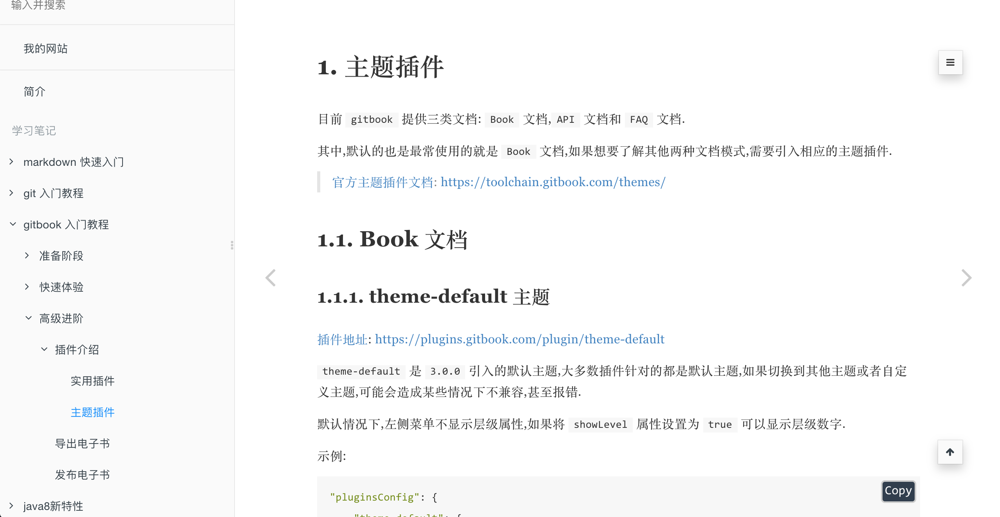
默认情况下左侧菜单树不显示目录层级
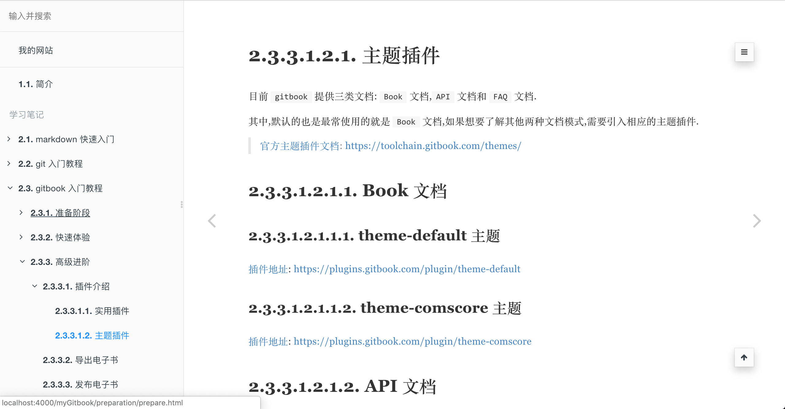
开启层级显示设置后,左侧菜单树显示当前目录层级
1.1.2. theme-comscore 主题
default 默认主题是黑白的,而 comscore 主题是彩色的,即标题和正文颜色有所区分.
示例:
"plugins": [
"theme-comscore"
]
效果:
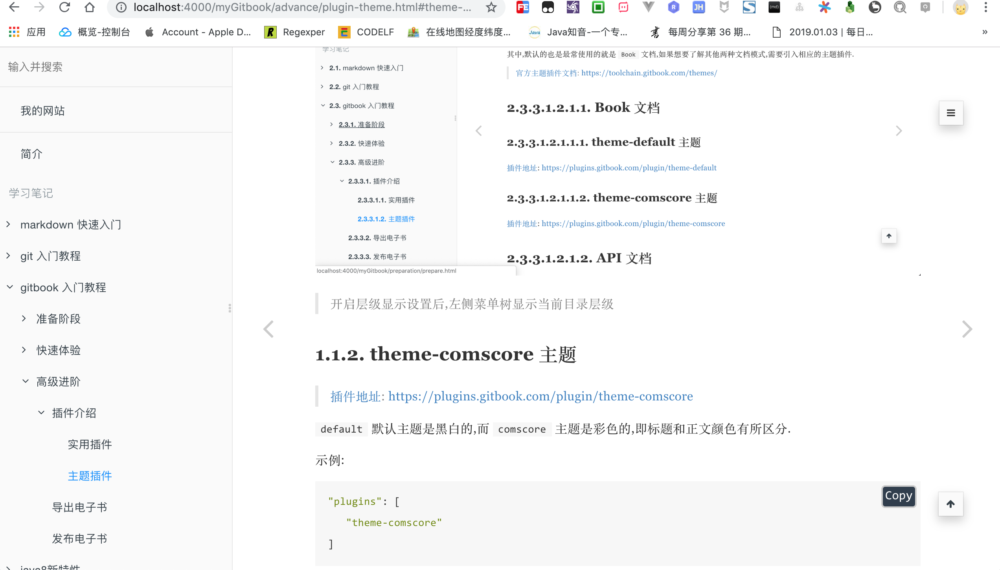
默认情况下各级标题颜色均是黑色,不同级别的标题仅仅是大小区别.
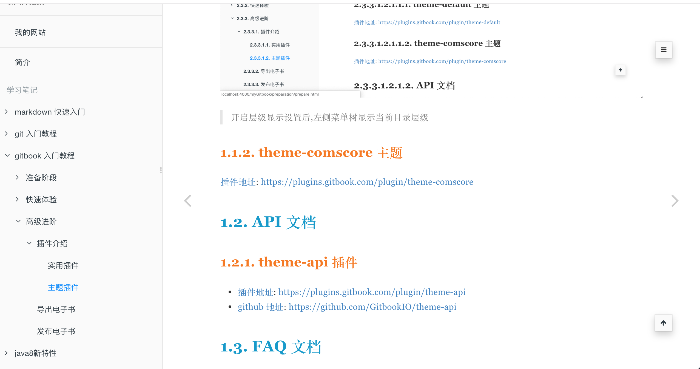
设置
comscore主题后,各级标题颜色不同,不仅仅是大小不同.
1.2. API 文档
1.2.1. theme-api 插件
如果文档本身是普普通文档模式,切换成 api 文档模式后并不会有太大变化,除非一开始就是接口文档,那样使用 theme-api 插件才能看出效果.
示例:
{
"plugins": ["theme-api"],
"pluginsConfig": {
"theme-api": {
"theme": "dark"
}
}
}
语法:
- 方法区
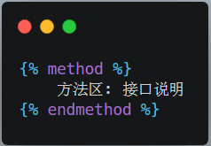
- 语法区
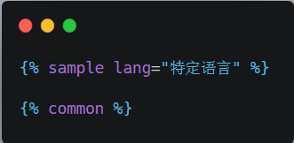
示例:
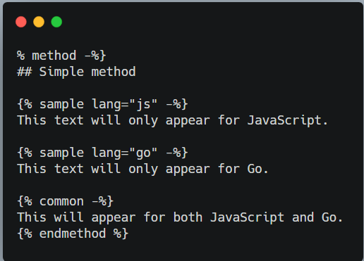
效果:
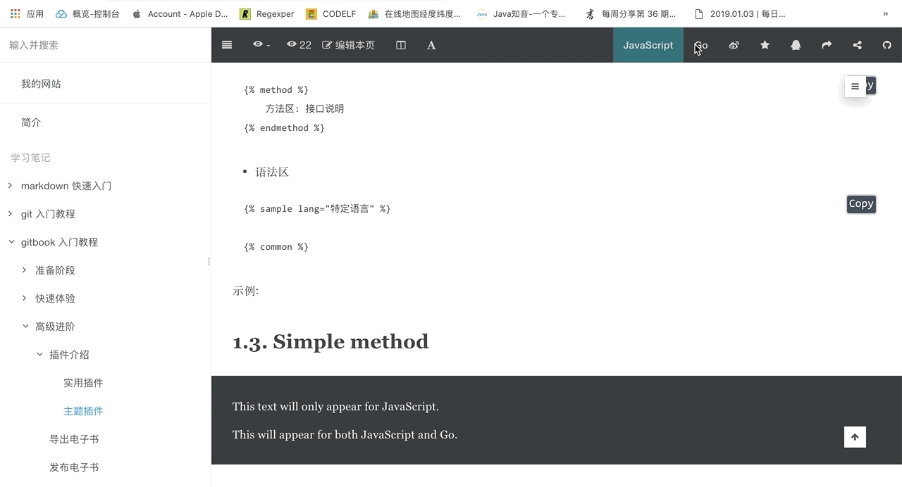
添加
api相关方法后的文档效果,正常会两列显示并在右上角增加语言切换工具.
1.3. FAQ 文档
1.3.1. theme-faq 插件
theme-faq 可以帮助我们构建问答中心,预设好常见问题以及相应答案模式,同时为了方便搜索到问题或答案,一般需要搜索插件的配合.
示例:
{
"plugins": [
"theme-faq",
"-fontsettings",
"-sharing",
"-search",
"search-plus"
]
}
帮助中心没有工具栏,因此涉及到工具类的插件一律失效或主动移除,同时默认搜索插件也会失效.
语法:
- 增加文章间的关联
---
related:
- some/other/page.md
- another_related_article.md
---
Content of my article!
在当前页面底部显示延伸阅读,支持
yaml语法关联到其他页面.
- 增加头部
logo
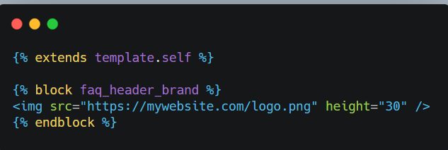
新建
_layouts/website/page.html文件,用于扩展当前主题插件来增加自定义logo.
- 增加导航栏链接
新建
_layouts/website/page.html文件,用于扩展当前主题插件来增加自定义导航栏链接.
示例:
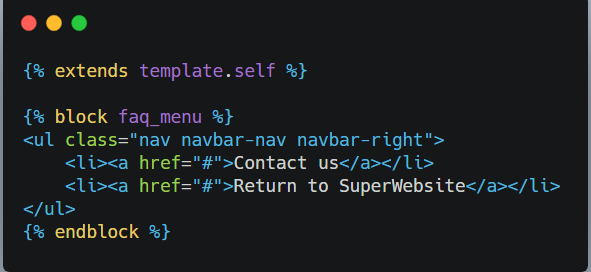
新建
_layouts/website/page.html文件,增加自定义logo和导航栏链接.
效果:
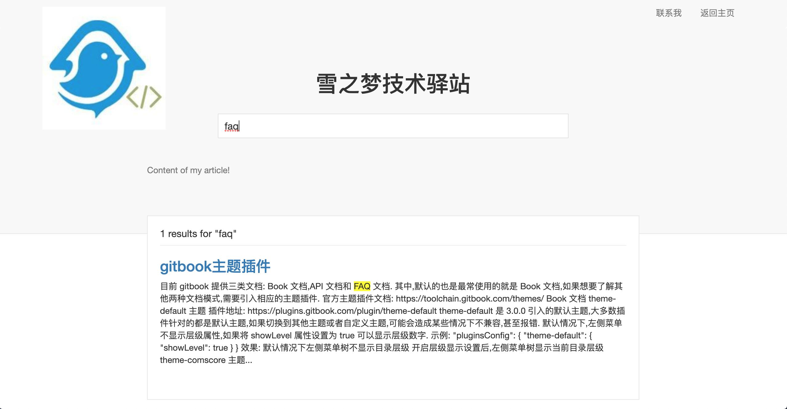
1.4. 小结
本节主要讲解了常用的三种文档模式,其中 default 主题插件,适合一般的博客类网站或静态网站,api 主题插件适合接口文档的编写,faq 主题插件则适合帮助中心.
三种主题插件分别对应不同的应用场景,默认情况下使用的是 default 主题插件,平时介绍的大多数功能插件也大多适合这种主题,另外两种主题可能就不能很好兼容第三方插件,需要亲身体验.
作者: 雪之梦技术驿站
链接: https://snowdreams1006.github.io/myGitbook/advance/plugin-theme.html
来源: 雪之梦技术驿站
本文原创发布于「雪之梦技术驿站」,转载请注明出处,谢谢合作!